utm-builder-broken-encode PASS 1.0
grade probeintent repairdomain marketingdifficulty d2ambiguity a3voice contextfulapps vscodebatch v11-500-s1
This script mangles our campaign links -- spaces must come out as %20 and it should refuse to build a URL when the campaign name is blank.
task config + evaluator
{
"config": [
{
"type": "execute",
"parameters": {
"command": "python3 -c \"import os;d='/home/user/marketing/utm';os.makedirs(d,exist_ok=True);open(os.path.join(d,'build_links.py'),'w').write('''BASE = \\\"https://northaisle.example/shop\\\"\\n\\n\\ndef build(campaign, source):\\n slug = campaign.replace(\\\" \\\", \\\"+\\\")\\n return BASE + \\\"?utm_campaign=\\\" + slug + \\\"&utm_source=\\\" + source\\n\\n\\nif __name__ == \\\"__main__\\\":\\n print(build(\\\"spring sale\\\", \\\"newsletter\\\"))\\n''')\"",
"shell": true
}
},
{
"type": "launch",
"parameters": {
"command": [
"code",
"/home/user/marketing/utm/build_links.py"
]
}
}
],
"evaluator": {
"func": "check_include_exclude",
"result": {
"type": "vm_command_line",
"command": [
"python3",
"-c",
"import sys, traceback\ndef _main():\n import subprocess, sys\n path = '/home/user/marketing/utm/build_links.py'\n code = 'import importlib.util,sys\\nspec=importlib.util.spec_from_file_location(\"m\",\"%s\")\\nm=importlib.util.module_from_spec(spec)\\nspec.loader.exec_module(m)\\nprint(m.build(\"spring sale\",\"newsletter\"))\\ntry:\\n r=m.build(\"\",\"newsletter\")\\n print(\"NOERROR:\"+str(r))\\nexcept Exception as e:\\n print(\"RAISED:\"+type(e).__name__)\\n' % path\n r = subprocess.run([sys.executable, '-c', code], capture_output=True, text=True)\n out = r.stdout.strip().splitlines()\n if r.returncode != 0 or len(out) < 2:\n print('script did not import/run: ' + r.stderr.strip()[-300:], file=sys.stderr)\n print('FAIL')\n raise SystemExit\n url, blank = out[0].strip(), out[1].strip()\n problem = None\n if 'utm_campaign=spring%20sale' not in url:\n problem = 'spaces not encoded as %20: ' + url\n elif '+' in url.split('?', 1)[-1]:\n problem = 'plus encoding still present: ' + url\n elif 'utm_source=newsletter' not in url:\n problem = 'utm_source lost: ' + url\n elif not blank.startswith('RAISED:'):\n problem = 'blank campaign did not raise: ' + blank\n if problem:\n print(problem, file=sys.stderr)\n print('PASS' if not problem else 'FAIL')\n\ntry:\n _main()\nexcept Exception:\n traceback.print_exc(file=sys.stderr)\n print(\"FAIL\")\n"
]
},
"expected": {
"type": "rule",
"rules": {
"include": [
"PASS"
],
"exclude": [
"FAIL"
]
}
}
}
}
step 1 09:20:05
THINKINGThe user wants me to modify build_links.py. Let me understand the current code first by taking a screenshot to see it clearly.
Current code:
```
BASE = "https://northisle.example/shop"
def build(campaign, source):
slug = campaign.replace(" ", "+")
return BASE + "?utm_campaign=" + slug + "&utm_source=" + source
if __name__ == "__main__":
print(build("spring sale", "newsletter"))
```
Two problems:
1. Spaces must come out as %20, not `+`. So `campaign.replace(" ", "+")` should be `campaign.replace(" ", "%20")`.
2. It should refuse to build a URL when the campaign name is blank. So add a check: if campaign is blank (empty or whitespace only), raise an error or return something indicating refusal. "Refuse to build a URL" — best to raise a ValueError.
Let me first look at the screen. I can see the code. Let me edit it. I'll dismiss the extension popup first, then edit line 5 and add a blank check in the function.
Let me plan the edits:
- Line 5: change `+` to `%20`
- In `build`, before computing slug, add: `if not campaign or not campaign.strip(): raise ValueError("campaign must not be blank")`
Actually "blank" typically means empty or whitespace-only. Let me use `if not campaign or campaign.isspace():` — but `not campaign.strip()` covers empty and whitespace-only. I'll use `if not campaign.strip(): raise ValueError(...)`.
Let me do this via direct editing. I'll click on line 5 to fix the replace first. Actually the simplest robust approach: select all and retype the whole file. But VSCode autocompletion/indentation could interfere. Let me instead do targeted edits.
Let me first dismiss the popup by clicking the X, then edit.
I'll take a screenshot first to confirm state — but I already have the screenshot. Let me proceed to dismiss popup and edit.
Plan:
1. Click X on popup.
2. Double-click on the `+` in line 5 to select it, type `%20`. Actually the `+` is inside quotes: `campaign.replace(" ", "+")`. I need to change the `"+")` part. Let me select the `+` between the quotes. Double-click might select the whole `+`. Let me triple-click line 5 and retype it cleanly.
Better: click at end of line 5, select whole line content and retype. Let me triple-click line 5 to select the line, then type the corrected line.
Line 5 should be: ` slug = campaign.replace(" ", "%20")`
Line 4 is the def line. I need to add the blank check as a new first line inside build.
For the blank check, I'll click at the start of line 5 (before slug), press Home, press Enter to make a new line above? Actually easier: click at beginning of line 5, add a new line before. Let me instead retype the whole function region.
Simplest reliable approach: Select the entire file content and retype it all. But auto-indentation in VSCode adds indentation automatically which can mess things up. To be safe I'll disable that concern by typing carefully... actually retyping risks auto-indent doubling.
I'll do targeted edits:
1. Triple-click line 5, type ` slug = campaign.replace(" ", "%20")`. This replaces the line. When I type leading spaces, VSCode might auto-indent too. Triple-click selects the line text including? Triple click selects the line content. Typing replaces. Leading 4 spaces I type — VSCode auto-indent may add. Hmm.
To avoid auto-indent issues, a cleaner method: select from line 5 to line 6 region and replace. But auto-indent still.
Alternative: Just edit the minimal characters. For the %20 fix, only change `+` to `%20`. Double-click the `+` character — but `+` surrounded by quotes. Double-click on a lone `+` may select just it or the token. Let me try: I'll click precisely to place cursor.
Actually the safest, least error-prone: use the terminal to rewrite the file with a heredoc. That avoids GUI auto-indent entirely. Let me open a terminal in VSCode and write the file. But the task is about editing the script; using terminal is fine and reliable.
Let me use Terminal > New Terminal, then use cat with a heredoc to write the file, then verify.
File path: /home/user/marketing/utm/build_links.py (from breadcrumb home > user > marketing > utm > build_links.py).
Let me write:
```python
BASE = "https://northisle.example/shop"
def build(campaign, source):
if not campaign or not campaign.strip():
raise ValueError("campaign name must not be blank")
slug = campaign.replace(" ", "%20")
return BASE + "?utm_campaign=" + slug + "&utm_source=" + source
if __name__ == "__main__":
print(build("spring sale", "newsletter"))
```
Using terminal heredoc is reliable. Let me do that.
ACTIONI'll fix this script. The two issues are: (1) spaces are currently encoded as `+` instead of `%20`, and (2) there's no guard against a blank campaign name. Let me use the integrated terminal to rewrite the file reliably (avoiding editor auto-indent issues), then verify it.
First, let me dismiss the extension popup and open a terminal.
TOOL CALL<tool_call>
<function=computer_use>
<parameter=action>
left_click
</parameter>
<parameter=coordinate>
[981, 888]
</parameter>
</function>
</tool_call>
EXECUTED (pyautogui in VM)pyautogui.click(1885, 960)
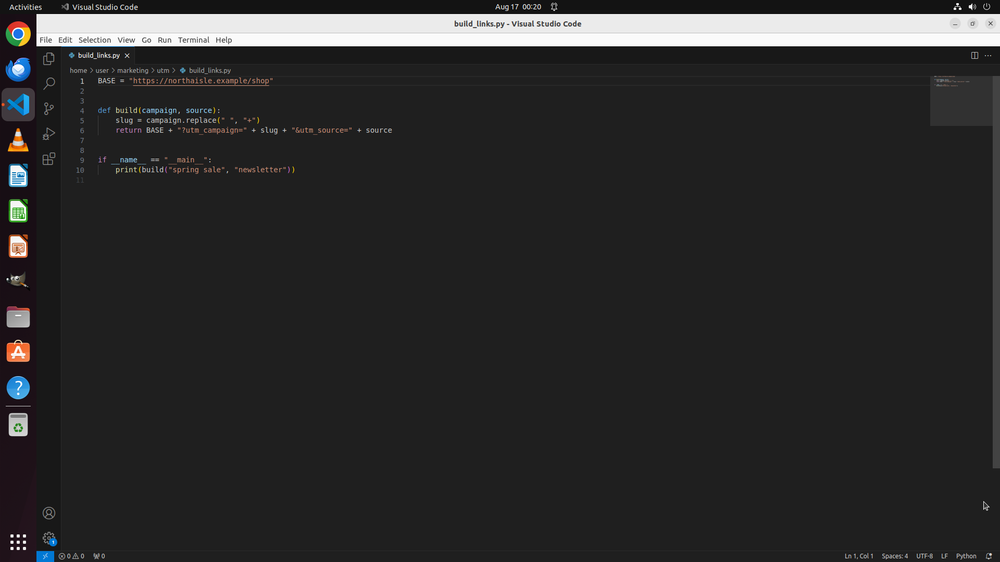
step 2 09:20:13
THINKINGPopup dismissed. Now I'll open a terminal via the Terminal menu, then write the file with a heredoc. The breadcrumb confirms path: home > user > marketing > utm > build_links.py, so /home/user/marketing/utm/build_links.py.
Let me open Terminal > New Terminal (Ctrl+` is the shortcut).
ACTIONThe popup is dismissed. Now I'll open the integrated terminal to rewrite the file reliably.
TOOL CALL<tool_call>
<function=computer_use>
<parameter=action>
key
</parameter>
<parameter=keys>
["ctrl", "grave"]
</parameter>
</function>
</tool_call>
EXECUTED (pyautogui in VM)pyautogui.hotkey("ctrl", "grave")
step 3 09:20:21
THINKINGThe terminal didn't appear. The Ctrl+` may not have worked because focus was in editor. Let me use the Terminal menu instead.
ACTIONThe terminal panel didn't open. Let me use the Terminal menu instead.
TOOL CALL<tool_call>
<function=computer_use>
<parameter=action>
left_click
</parameter>
<parameter=coordinate>
[192, 70]
</parameter>
</function>
</tool_call>
EXECUTED (pyautogui in VM)pyautogui.click(369, 75)
step 4 09:20:29
THINKINGThe Terminal menu is open. I'll click "New Terminal".
TOOL CALL<tool_call>
<function=computer_use>
<parameter=action>
left_click
</parameter>
<parameter=coordinate>
[211, 95]
</parameter>
</function>
</tool_call>
EXECUTED (pyautogui in VM)pyautogui.click(405, 102)
step 5 09:20:38
THINKINGTerminal is open. Now I'll write the corrected file using a heredoc. The path is /home/user/marketing/utm/build_links.py.
I'll use a quoted heredoc to avoid shell interpretation. Let me type the command.
The file content:
```python
BASE = "https://northisle.example/shop"
def build(campaign, source):
if not campaign or not campaign.strip():
raise ValueError("campaign name must not be blank")
slug = campaign.replace(" ", "%20")
return BASE + "?utm_campaign=" + slug + "&utm_source=" + source
if __name__ == "__main__":
print(build("spring sale", "newsletter"))
```
I'll click in the terminal and type the heredoc command.
ACTIONThe terminal is open. Now I'll write the corrected file using a quoted heredoc (so nothing is shell-interpreted), which handles indentation safely.
TOOL CALL<tool_call>
<function=computer_use>
<parameter=action>
left_click
</parameter>
<parameter=coordinate>
[468, 791]
</parameter>
</function>
</tool_call>
EXECUTED (pyautogui in VM)pyautogui.click(899, 855)
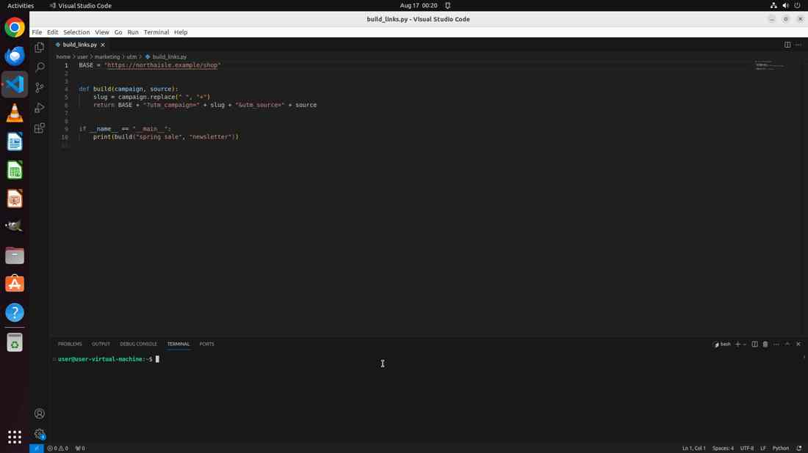
step 6.1 09:20:49
THINKINGNow I'll type the heredoc command. I'll type the whole thing as one type action with newlines. Using a quoted delimiter 'PYEOF' prevents shell interpretation of $ and quotes.
TOOL CALL<tool_call>
<function=computer_use>
<parameter=action>
type
</parameter>
<parameter=text>
cat > /home/user/marketing/utm/build_links.py << 'PYEOF'
BASE = "https://northisle.example/shop"
def build(campaign, source):
if not campaign or not campaign.strip():
raise ValueError("campaign name must not be blank")
slug = campaign.replace(" ", "%20")
return BASE + "?utm_campaign=" + slug + "&utm_source=" + source
if __name__ == "__main__":
print(build("spring sale", "newsletter"))
PYEOF
</parameter>
</function>
</tool_call>
EXECUTED (pyautogui in VM)pyautogui.typewrite("cat > /home/user/marketing/utm/build_links.py << 'PYEOF'")
step 6.2 09:20:52
EXECUTED (pyautogui in VM)pyautogui.press("enter")
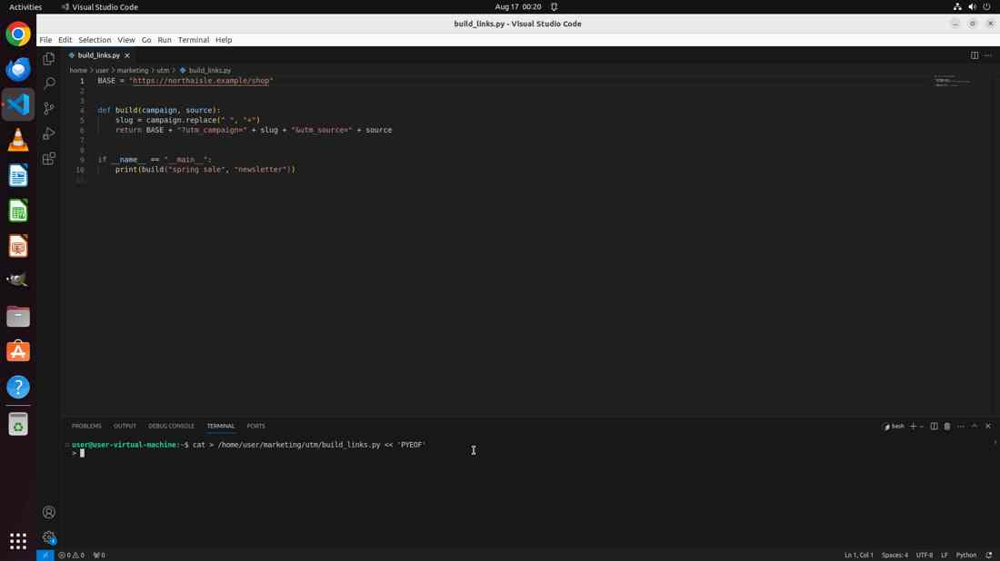
step 6.3 09:20:55
EXECUTED (pyautogui in VM)pyautogui.typewrite("BASE = \"https://northisle.example/shop\"")
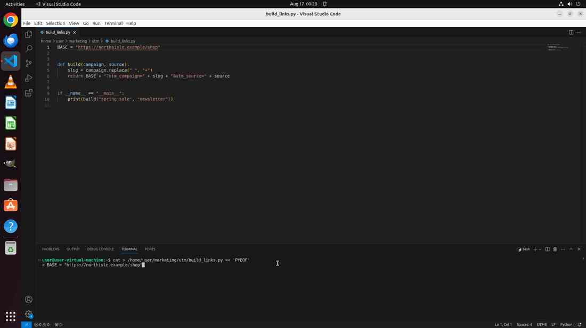
step 6.4 09:20:59
EXECUTED (pyautogui in VM)pyautogui.press("enter")
step 6.5 09:21:02
EXECUTED (pyautogui in VM)pyautogui.press("enter")
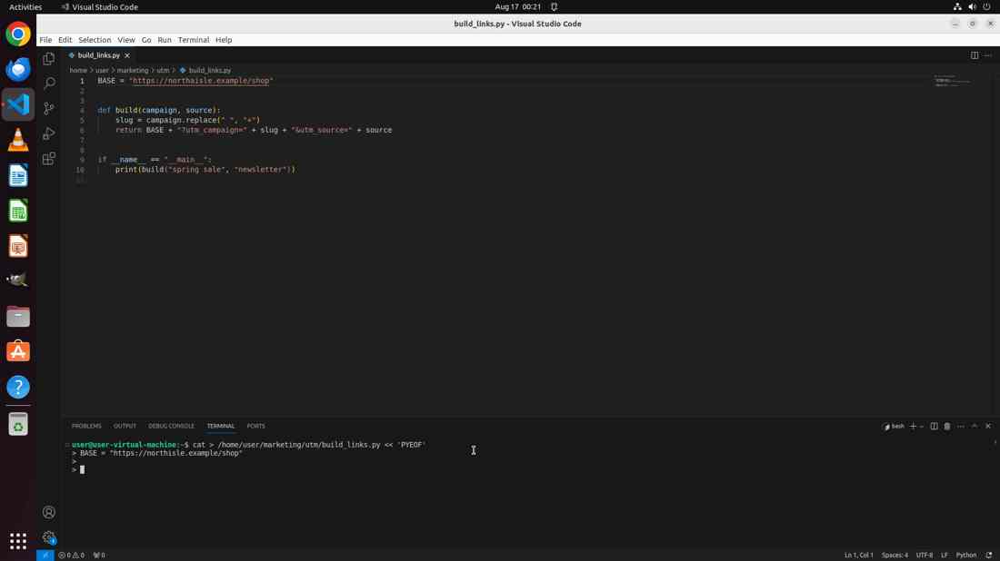
step 6.6 09:21:05
EXECUTED (pyautogui in VM)pyautogui.press("enter")
step 6.7 09:21:09
EXECUTED (pyautogui in VM)pyautogui.typewrite("def build(campaign, source):")
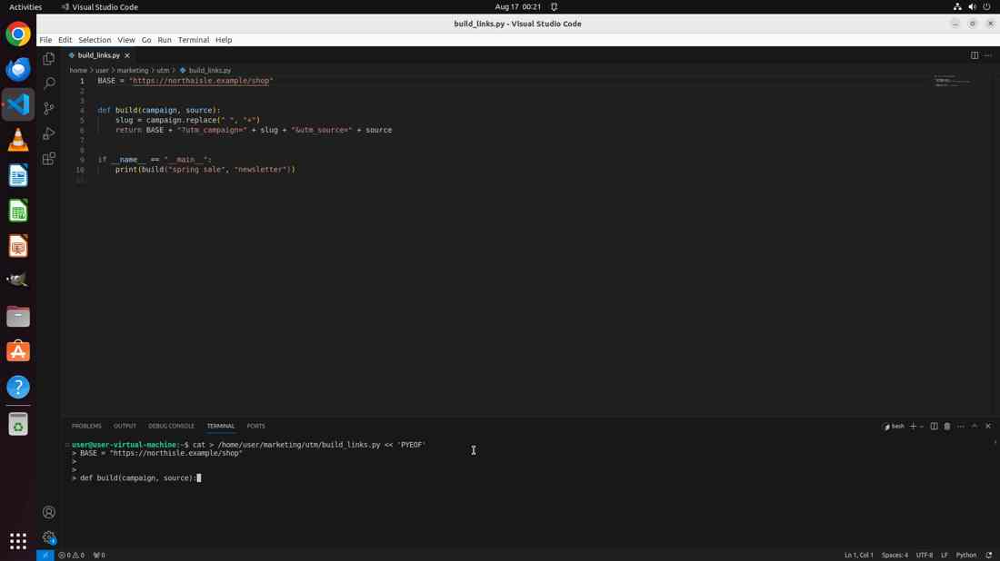
step 6.8 09:21:12
EXECUTED (pyautogui in VM)pyautogui.press("enter")
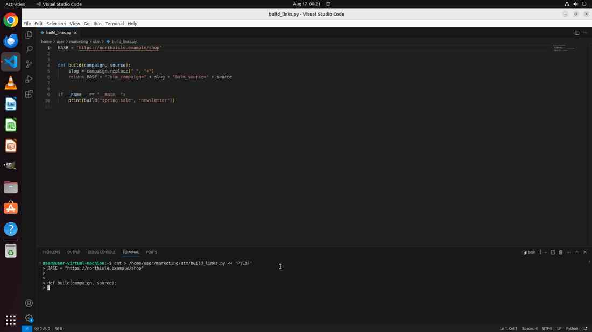
step 6.9 09:21:15
EXECUTED (pyautogui in VM)pyautogui.typewrite(" if not campaign or not campaign.strip():")
step 6.10 09:21:19
EXECUTED (pyautogui in VM)pyautogui.press("enter")
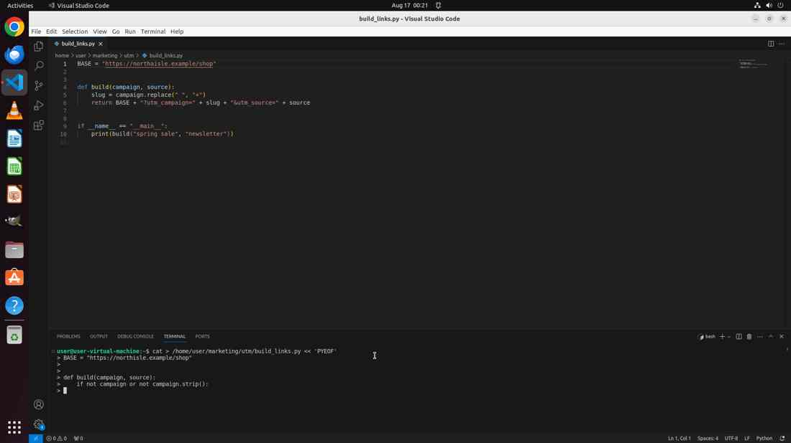
step 6.11 09:21:22
EXECUTED (pyautogui in VM)pyautogui.typewrite(" raise ValueError(\"campaign name must not be blank\")")
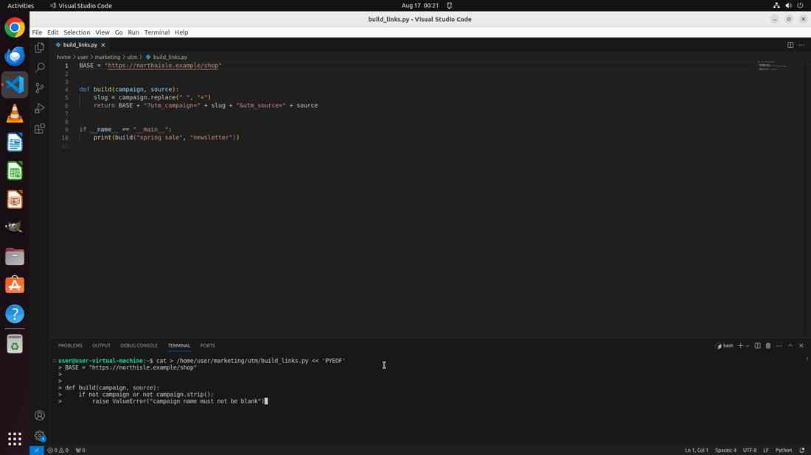
step 6.12 09:21:26
EXECUTED (pyautogui in VM)pyautogui.press("enter")
step 6.13 09:21:29
EXECUTED (pyautogui in VM)pyautogui.typewrite(" slug = campaign.replace(\" \", \"%20\")")
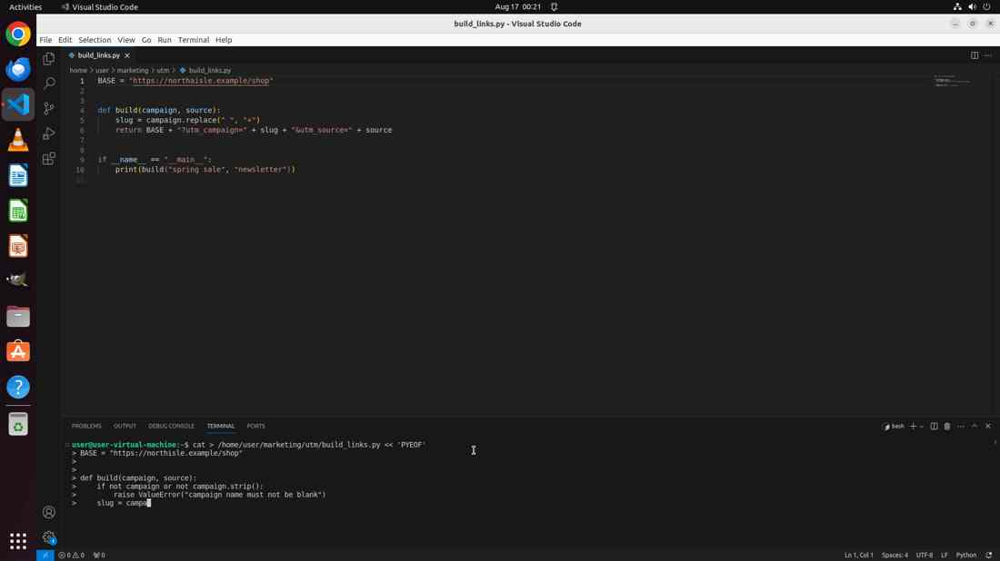
step 6.14 09:21:32
EXECUTED (pyautogui in VM)pyautogui.press("enter")
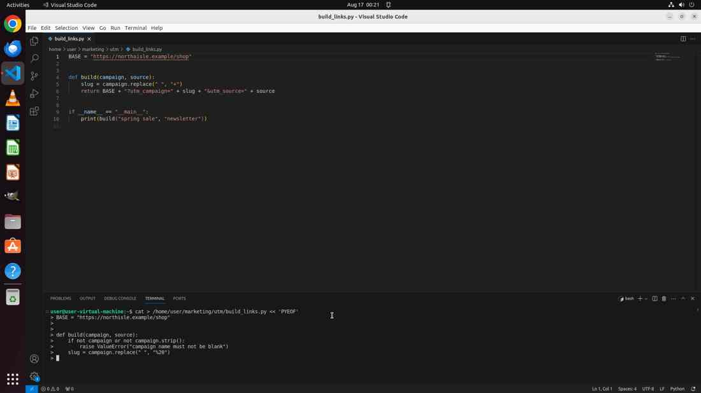
step 6.15 09:21:36
EXECUTED (pyautogui in VM)pyautogui.typewrite(" return BASE + \"?utm_campaign=\" + slug + \"&utm_source=\" + source")
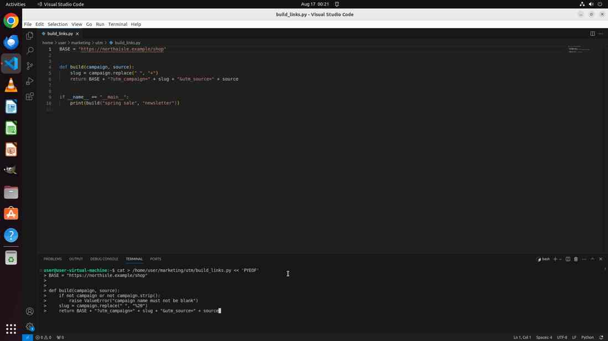
step 6.16 09:21:39
EXECUTED (pyautogui in VM)pyautogui.press("enter")
step 6.17 09:21:42
EXECUTED (pyautogui in VM)pyautogui.press("enter")
step 6.18 09:21:46
EXECUTED (pyautogui in VM)pyautogui.press("enter")
step 6.19 09:21:49
EXECUTED (pyautogui in VM)pyautogui.typewrite("if __name__ == \"__main__\":")
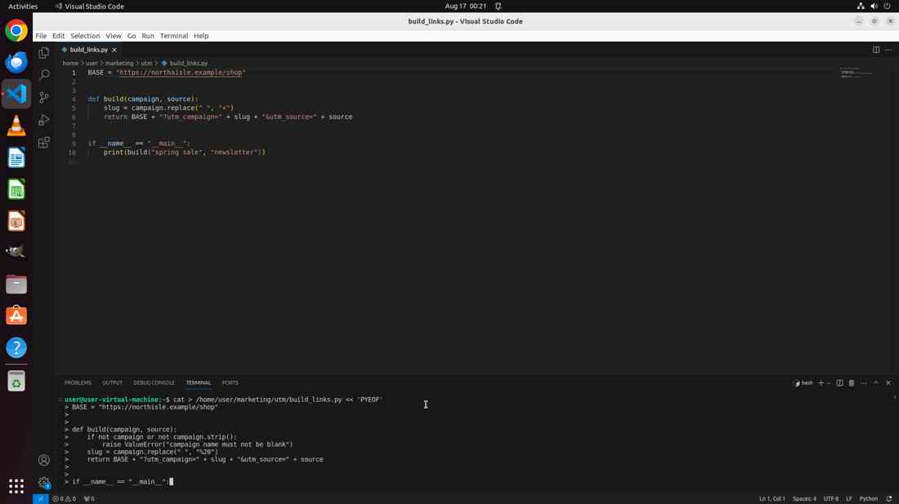
step 6.20 09:21:52
EXECUTED (pyautogui in VM)pyautogui.press("enter")
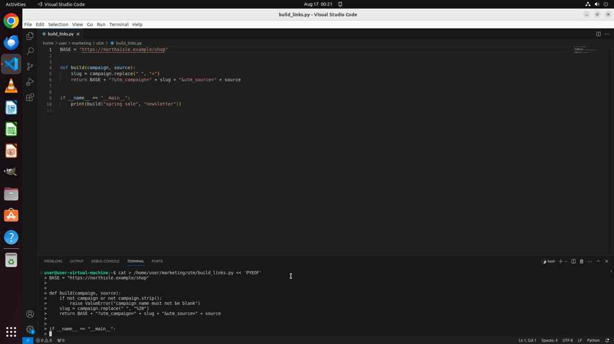
step 6.21 09:21:56
EXECUTED (pyautogui in VM)pyautogui.typewrite(" print(build(\"spring sale\", \"newsletter\"))")
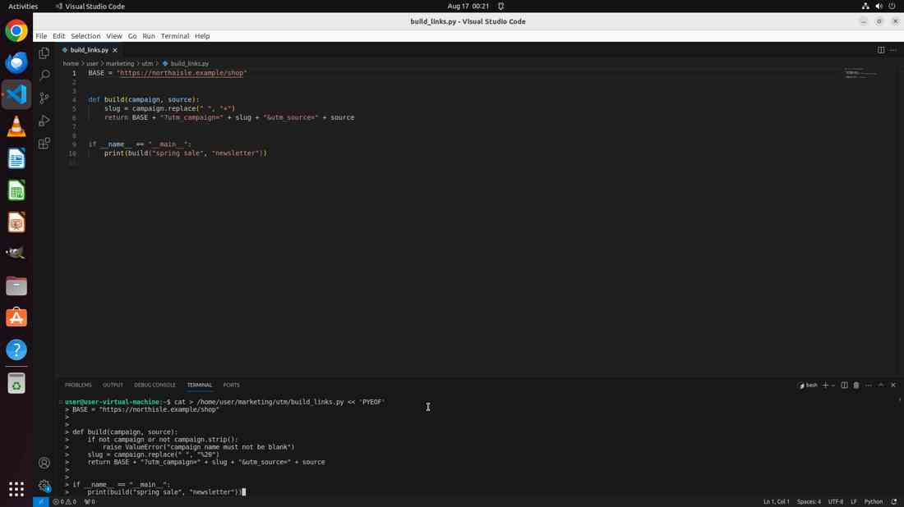
step 6.22 09:21:59
EXECUTED (pyautogui in VM)pyautogui.press("enter")
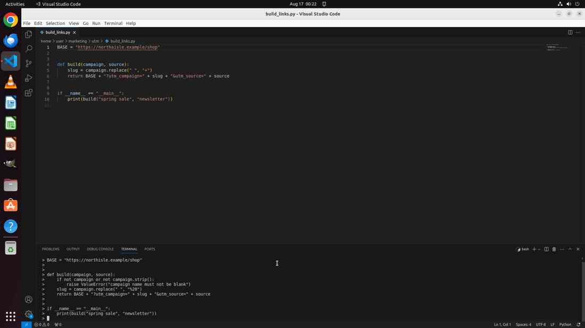
step 6.23 09:22:02
EXECUTED (pyautogui in VM)pyautogui.typewrite("PYEOF")
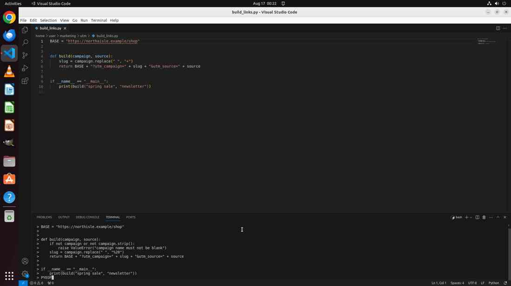
step 7 09:22:11
THINKINGThe heredoc content was typed. The final line "PYEOF" is shown but not yet entered (cursor after it). I need to press Enter to complete the heredoc. Wait, looking at the terminal, the last line shows "> PYEOF" with cursor. The trailing newline in my type text should have triggered the heredoc close. But the prompt still shows `>` continuation? Actually the last visible line is `> PYEOF` with cursor right after. It seems the closing PYEOF hasn't been submitted yet. Let me press Enter to be safe.
ACTIONThe heredoc lines were entered. Let me press Enter to complete it, then verify the file.
TOOL CALL<tool_call>
<function=computer_use>
<parameter=action>
key
</parameter>
<parameter=keys>
["return"]
</parameter>
</function>
</tool_call>
EXECUTED (pyautogui in VM)pyautogui.press("return")
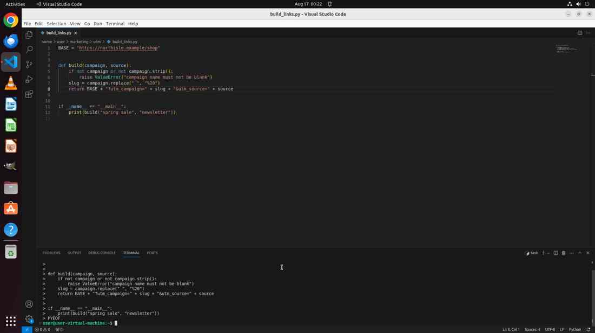
step 8 09:22:23
THINKINGThe file has been written and the editor auto-reloaded it. The editor now shows:
```
1 BASE = "https://northisle.example/shop"
2
3
4 def build(campaign, source):
5 if not campaign or not campaign.strip():
6 raise ValueError("campaign name must not be blank")
7 slug = campaign.replace(" ", "%20")
8 return BASE + "?utm_campaign=" + slug + "&utm_source=" + source
9
10
11 if __name__ == "__main__":
12 print(build("spring sale", "newsletter"))
```
The prompt returned to normal. Now let me verify by running the script and testing the blank case. Let me run:
1. python3 the file -> should print https://northisle.example/shop?utm_campaign=spring%20sale&utm_source=newsletter
2. Test blank: python3 -c "from build_links import build; build(' ','x')" should raise ValueError.
Let me run both. First run the file.
ACTIONThe file was rewritten and the editor reloaded it, showing the new guard clause and the `%20` encoding. Now let me verify the behavior: run the script and test the blank-campaign case.
TOOL CALL<tool_call>
<function=computer_use>
<parameter=action>
type
</parameter>
<parameter=text>
cd /home/user/marketing/utm && python3 build_links.py && python3 -c "from build_links import build; build(' ', 'x'); print('NO ERROR - BAD')"
</parameter>
</function>
</tool_call>
EXECUTED (pyautogui in VM)pyautogui.typewrite("cd /home/user/marketing/utm && python3 build_links.py && python3 -c \"from build_links import build; build(' ', 'x'); print('NO ERROR - BAD')\"")
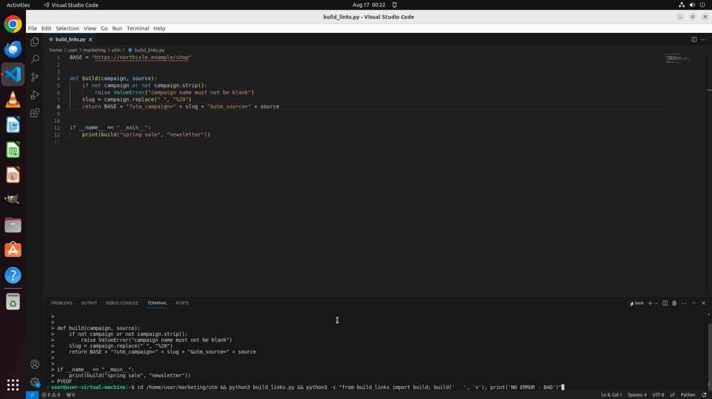
step 9 09:22:30
THINKINGThe command is typed but I need to press Enter to execute it. Actually the type included a trailing newline, but the prompt shows the command still on the line without execution yet. Let me press Enter.
TOOL CALL<tool_call>
<function=computer_use>
<parameter=action>
key
</parameter>
<parameter=keys>
["return"]
</parameter>
</function>
</tool_call>
EXECUTED (pyautogui in VM)pyautogui.press("return")
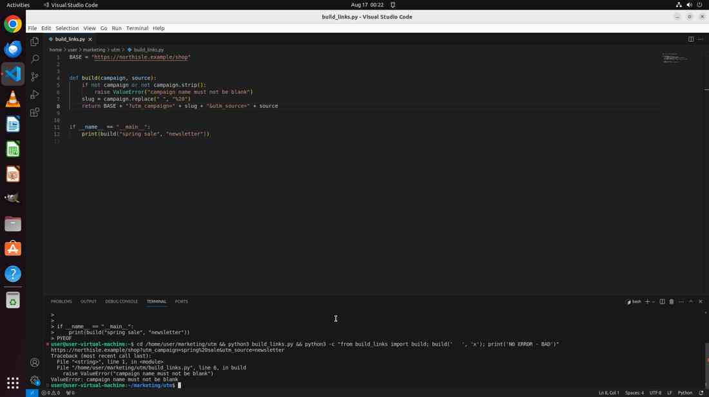
step 10 09:22:43
THINKINGBoth verifications pass:
1. The script printed: `https://northisle.example/shop?utm_campaign=spring%20sale&utm_source=newsletter` — the space is correctly encoded as `%20` (not `+`).
2. The blank campaign test raised `ValueError: campaign name must not be blank` — so it refuses to build a URL when the campaign is blank. And "NO ERROR - BAD" was NOT printed, confirming the exception fired.
The task is complete. The file is saved (written directly to disk via cat, and editor reflects it). No unsaved changes indicator. I'll summarize.
ACTIONBoth fixes are confirmed working:
1. **Spaces → `%20`:** Running the script now outputs
`https://northisle.example/shop?utm_campaign=spring%20sale&utm_source=newsletter`
(previously it produced `spring+sale`).
2. **Refuses blank campaign names:** Passing a blank/whitespace-only campaign raises `ValueError: campaign name must not be blank`, and the "NO ERROR - BAD" fallback never printed, confirming the guard fires before any URL is built.
Here's the final `build_links.py`:
```python
BASE = "https://northisle.example/shop"
def build(campaign, source):
if not campaign or not campaign.strip():
raise ValueError("campaign name must not be blank")
slug = campaign.replace(" ", "%20")
return BASE + "?utm_campaign=" + slug + "&utm_source=" + source
if __name__ == "__main__":
print(build("spring sale", "newsletter"))
```
The guard uses `campaign.strip()` so both empty strings and whitespace-only names are rejected, and the `replace` now uses `%20` so campaign links no longer get mangled with `+`.
EXECUTED (pyautogui in VM)DONE